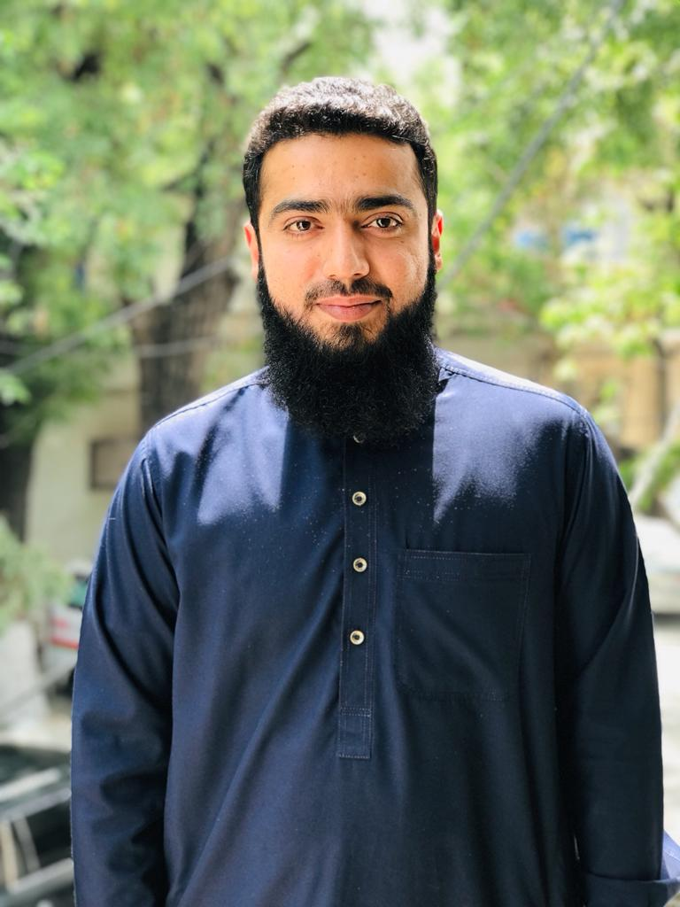

BILAL AHMAD

Summary
Versatile Professional with Extensive Stenography Experience, Administrative Expertise, and Ambitions in Web Development
Dynamic and accomplished professional with a rich background in stenography and progressive administrative roles across various government departments. From serving as a Stenographer in District Courts Sheikhupura and Lahore to contributing significantly in roles within the several departments of Civil Secretariat such as Specialized Healthcare & Medical Education Department, Confidential Wing of Services & General Administration Department, Primary & Secondary Healthcare Department and Chief Minister Office. I have consistently excelled in diverse and challenging environments.
Education
- Bachelor of Arts - Punjab University Lahore (2012-2014)
- Intermediate in Computer Sciences - Lahore Board (2009-2011)
- Matriculation in Science Subjects - Lahore Board (2009)
Work Experience
Stenographer in District Courts Sheikhupura and Lahore
December 2014 to November 2016
- Drafting the Judgments announced by Magistrates and Judges
- Taking dictation
Stenographer in Civil Secretariat
November 2016 to till now
- Contributed to the efficient functioning of the Specialized Healthcare & Medical Education Department
- Prepare working papers in Confidential Wing of Services & General Administration Department for conducting of Promotion Boards for the officers in BS-17 to BS-19
- Performed various roles, including Stenographer in establishment offices, Personal Assistant (PA) with senior officers, PA in the Admin Wing, and Caretaker of Primary & Secondary Healthcare Department.
- Currently contributing to the Chief Minister's office regarding disposal of summaries and other matters assigned by the High Autorities
Skills
- Office Management
- Proven ability to maintain confidentiality and handle sensitive information
- Assist the High Authorities in disposal of work
- Exceptional organizational and multitasking abilities
- Stenographer
- Administrative Support
- Confidentiality and Data Management
- Personal Assistance
- Caretaker Responsibilities
Other
My Hobbies
Contact Me